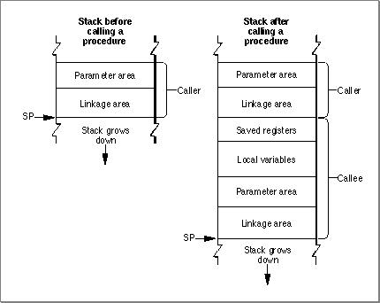
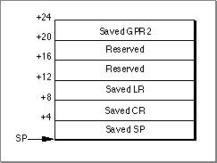

Legacy Document
Important: The information in this document is obsolete and should not be used for new development.
Important: The information in this document is obsolete and should not be used for new development.


PowerPC Stack Structure
The PowerPC runtime environment uses a grow-down stack that contains linkage information, local variables, and a routine's parameter information as shown in Figure 4-1.
The typical PowerPC stack conventions use only a stack pointer (held in register GPR1) and no frame pointer. This configuration assumes a fixed stack frame size, which is known at compile time. Parameters are not passed by pushing them onto the stack.
The calling routine's stack frame includes a parameter area and some linkage information. The parameter area has space for the parameters of any routines the caller calls (not the parameters of the caller itself). Since the calling routine might call several different routines, the parameter area must be large enough to accomodate the largest parameter list of all the routines the caller calls. It is the calling routine's responsibility for setting up the parameter area before each call to some other routine, and the called routine's responsibility for accessing the parameters placed within it. See "Routine Calling Conventions," beginning on page 4-11, for more information about the calling conventions.
The calling routine's linkage area holds a number of values, some of which are saved by the calling routine and some by the called routine. Figure 4-2 shows the structure of the linkage area.
Figure 4-2 A stack frame's linkage area

The elements within the linkage area are as follows:
Note that the linkage area is at the top of the stack, adjacent to the stack pointer. This positioning is necessary so the calling routine can find and restore the values stored there and also to enable the called routine to find the caller's parameter area. This placement means that a routine cannot push and pop parameters from the stack once the stack frame is set up.
- The base register (GPR2) value is saved at
20(SP)by the calling routine prior to the call if
- the call is to an imported routine
- the call is a pointer-based call (which may or may not be cross-fragment)
This action ensures that the calling routine can still access its own direct data area upon return. See "PowerPC Implementation," beginning on page 2-6, for more information. Local calls do not need to save this value.
- The Link Register (LR) value is saved at
8(SP)by the called routine if it chooses to do so.- The Condition Register (CR) value may be saved at
4(SP)by the called routine. As with the Link Register value, the called routine is not required to save this value.- The stack pointer is always saved by the calling routine as part of its stack frame.
The stack frame also includes space for the called routine's local variables. In general, the general-purpose registers GPR13 through GPR31 and the floating-point registers FPR14 through FPR31 are reserved for the routine's local variables. However, if the routine contains more local variables than would fit in the registers, it uses additional space on the stack. The size of the local variable area is determined at compile time; once a stack frame is allocated, the size of the local variable area cannot change.
Subtopics
- Prologs and Epilogs
- The Red Zone